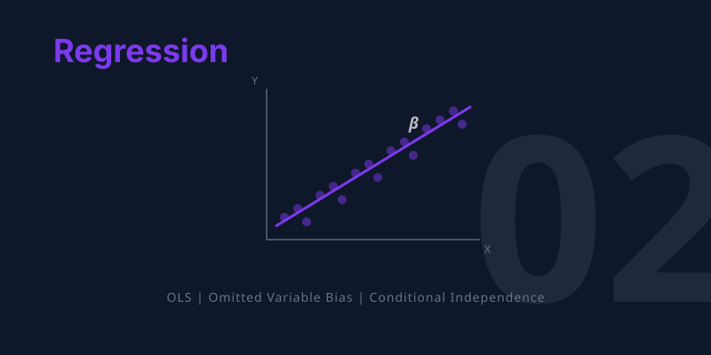

graph TD
A["THE QUESTION: Is a private college worth the extra tuition?"]
B["THE PROBLEM: Private school students differ from public school students"]
C["THE TOOL: Regression holds observed characteristics constant"]
D["THE RISK: Omitted Variables Bias when controls are incomplete"]
E["THE TEST: Sensitivity analysis — do results change with more controls?"]
A --> B --> C --> D --> E
style A fill:#3498db,color:#fff
style B fill:#c0392b,color:#fff
style C fill:#8e44ad,color:#fff
style D fill:#e67e22,color:#fff
style E fill:#2d8659,color:#fff
linkStyle default stroke:#64748b,stroke-width:2px
2. Regression


TipLearning Objectives
By the end of this chapter, you will be able to:
- Explain how regression controls approximate experimental comparisons
- Write and interpret a regression model with treatment and control variables
- State the Omitted Variables Bias (OVB) formula and use it to predict the direction of bias
- Distinguish between short and long regressions
- Understand when adding controls helps — and when it can make things worse (bad controls)
- Apply regression sensitivity analysis to assess the robustness of causal estimates
This chapter introduces regression — the most widely used tool in the econometrician’s toolkit. When randomized experiments are not available, regression lets us approximate an experimental comparison by holding observable characteristics constant.
Key Concepts and Definitions
Ordinary Least Squares (OLS): The most common method for fitting a regression line. It chooses the coefficients that minimize the sum of squared differences between predicted and actual values of the outcome.
TipExample
To estimate the earnings premium of a college degree, OLS finds the line through the data that makes the squared prediction errors as small as possible.
NoteAnalogy
Like a tailor measuring a suit. OLS adjusts the fit so the overall gap between the fabric and the body is minimized — no single measurement is perfect, but the total mismatch is as small as it can be.
Omitted Variable Bias (OVB): The bias that results when a relevant variable is left out of a regression. The formula \(\text{OVB} = \pi_1 \times \gamma\) shows that bias equals the relationship between the omitted variable and the treatment, times the effect of the omitted variable on the outcome.
TipExample
Omitting ability from a regression of earnings on schooling inflates the schooling coefficient, because ability is positively correlated with both.
NoteAnalogy
Like blaming coffee for heart disease while ignoring that coffee drinkers are also more likely to smoke. If you leave smoking out of the picture, coffee gets the blame for what smoking caused.
Short vs. Long Regression: The “short” regression includes fewer control variables and is more vulnerable to OVB. The “long” regression adds controls to reduce bias. The difference between their coefficients reveals the OVB.
TipExample
Regressing earnings on college attendance (short) gives a 14% premium. Adding SAT scores and parental income (long) reduces it to 2%. The 12% gap is OVB.
NoteAnalogy
Like describing someone in one sentence (short) versus a full paragraph (long). The short description may miss important details that change the story.
Control Variable: A variable included in a regression to hold constant an observed characteristic, allowing the researcher to isolate the effect of the treatment variable. Good controls are pre-treatment confounders.
TipExample
When estimating the effect of class size on test scores, controlling for school funding ensures we compare schools with similar resources.
NoteAnalogy
Like a cooking competition where every contestant uses the same oven and ingredients. Controlling for equipment lets you fairly judge each chef’s skill alone.
Bad Control: A variable that is caused by the treatment and should not be included in the regression. Controlling for it blocks part of the causal pathway and introduces new bias.
TipExample
Controlling for occupation when estimating the return to education removes one of the main channels through which education raises earnings, biasing the estimate downward.
NoteAnalogy
Like judging a medicine’s effect on health but only counting patients who did not get better. By filtering on the outcome’s pathway, you miss part of the medicine’s true benefit.
Sensitivity Analysis: A robustness check that examines whether the treatment effect estimate changes when additional controls are added. Stable estimates across specifications increase confidence in the causal interpretation.
TipExample
Dale and Krueger showed that the private college premium barely changed after adding SAT scores and parental income, suggesting the remaining controls (application behavior) captured the key confounders.
NoteAnalogy
Like stress-testing a bridge. If the bridge holds up under different loads and conditions, you trust it is sturdy. If the estimate survives adding many controls, you trust it is not driven by omitted variables.
Auxiliary Regression: The regression of the omitted variable on the treatment variable, used to compute the \(\pi_1\) component of the OVB formula. It tells you how strongly the omitted variable is related to treatment assignment.
TipExample
Regressing ability on private school attendance shows \(\pi_1 > 0\): higher-ability students are more likely to attend private school.
NoteAnalogy
Like checking how correlated two suspects are before deciding if one is covering for the other. The auxiliary regression tells you how much the missing variable “travels with” the treatment.
Ceteris Paribus: A Latin phrase meaning “all other things being equal.” In regression, the coefficient on the treatment variable represents the effect of treatment holding all control variables constant.
TipExample
A regression coefficient of $5,000 on private school attendance, with SAT scores held constant, means private school raises earnings by $5,000 for students with the same SAT scores.
NoteAnalogy
Like comparing two identical houses on the same street that differ only in having a garage. Any price difference is the value of the garage, all else equal.
Conditional Independence Assumption (CIA): The assumption that, after controlling for observed variables, treatment assignment is as good as random. If the CIA holds, regression gives causal estimates.
TipExample
If we control for SAT scores, parental income, and application behavior, the remaining variation in college choice may be essentially random, satisfying the CIA.
NoteAnalogy
Like matching identical twins who differ only in one habit (say, drinking coffee). If the match is perfect, any health difference is caused by coffee. CIA says “our controls are good enough to create such a match.”
Regression to the Mean: The statistical phenomenon where extreme observations tend to be followed by less extreme ones, not because of any causal process, but because extreme values partly reflect random luck that is unlikely to repeat.
TipExample
A student who scores in the 99th percentile on one exam will likely score lower on the next, even without any change in ability — the first score was partly luck.
NoteAnalogy
Like a golfer who shoots a 62 on Saturday. His Sunday round will probably be closer to his average, not because he got worse, but because unusually good luck rarely repeats.
Is a Private College Worth It?
Students at elite private universities in the United States pay roughly $20,000 more per year in tuition than those at public universities. Graduates of Harvard, Stanford, and Yale earn substantially more than graduates of state schools. But does the private school cause higher earnings, or are the students who attend these schools simply different — smarter, more motivated, better connected — in ways that would lead to high earnings regardless?
This is the same selection bias problem we met in Chapter 1. But here, we can’t run a randomized experiment (Harvard’s admissions office won’t flip a coin). Instead, we reach for regression.
NoteIntuition Builder: Regression as Automated Matching
Think of regression as a matchmaking service. It finds pairs of students who look similar on paper — same test scores, same family income, same types of schools applied to — but one went private and the other went public. The regression estimate is like averaging the earnings difference across all these matched pairs.
When the matching is on all the right variables, regression approximates what a randomized experiment would show. When important variables are missing, the match is imperfect, and bias creeps in.
To separate the school’s causal effect from the student’s pre-existing advantages, we need a tool that holds observable characteristics constant. That tool is regression.
How Regression Works
The Regression Model
A regression links an outcome (\(Y_i\)) to a treatment variable (\(P_i\)) while holding control variables (\(X_i\)) constant:
\[Y_i = \alpha + \beta P_i + \gamma X_i + e_i\]
where:
- \(\alpha\) = intercept (average outcome when \(P_i = 0\) and \(X_i = 0\))
- \(\beta\) = the treatment effect we’re after (how much \(Y\) changes when \(P\) switches from 0 to 1, holding \(X\) constant)
- \(\gamma\) = effect of the control variable
- \(e_i\) = residual (everything else affecting \(Y\) that’s not in the model)
OLS (Ordinary Least Squares) chooses \(\alpha\), \(\beta\), and \(\gamma\) to minimize the sum of squared residuals — making the model’s predictions as close to the actual data as possible.
NoteConnection to Chapter 1
In Chapter 1, we regressed outcomes on a treatment dummy with no controls. The coefficient was the difference in means between treated and untreated. Adding controls is the key innovation of Chapter 2: regression holds the controls constant, producing an “other things equal” comparison within groups that share the same control values.
Seeing OVB with Simulated Data
To understand omitted variables bias, let’s create a dataset where we know the truth — because we designed it ourselves. This makes it easy to see when regression gets it right and when it goes wrong.
The Data-Generating Process
We simulate 1,000 students choosing between private and public colleges:
Code
import numpy as np
import pandas as pd
import statsmodels.formula.api as smf
# Set seed so everyone gets the same random numbers
np.random.seed(42)
n = 1000 # number of simulated students
# --- Step 1: Generate ABILITY (the unobserved confounder) ---
# Each student gets a random ability score (mean=50, sd=10)
ability = np.random.normal(50, 10, n)
# --- Step 2: Private school CHOICE depends on ability ---
# Higher ability → higher probability of choosing private school (logistic function)
# Students with ability above 50 have >50% chance; below 50 have <50% chance
prob_private = 1 / (1 + np.exp(-(ability - 50) / 5))
# Flip a coin for each student using their personal probability
private = np.random.binomial(1, prob_private)
# --- Step 3: EARNINGS depend on both private school AND ability ---
# The TRUE causal effect of private school is exactly $5,000
true_effect = 5000
# Base pay ($30,000) + private school bonus + ability bonus + random noise
earnings = (30000
+ true_effect * private
+ 800 * ability
+ np.random.normal(0, 5000, n))
# --- Step 4: Combine into a clean dataset ---
students = pd.DataFrame({
"earnings": earnings,
"private": private,
"ability": ability,
})
students.head(5)| earnings | private | ability | |
|---|---|---|---|
| 0 | 77427.667839 | 1 | 54.967142 |
| 1 | 65133.103563 | 0 | 48.617357 |
| 2 | 81777.380857 | 1 | 56.476885 |
| 3 | 93886.491081 | 1 | 65.230299 |
| 4 | 58750.910654 | 0 | 47.658466 |
ImportantThe Ground Truth
We built this data so that:
- The true causal effect of private school is exactly $5,000
- Ability independently increases earnings AND makes private school more likely
- This creates selection bias: private school students earn more partly because they’re higher-ability, not just because of the school
The Short Regression (Omitting Ability)
What happens if we regress earnings on private without controlling for ability?
Code
# SHORT regression: omit the confounder (ability)
short_model = smf.ols("earnings ~ private", data=students)
short = short_model.fit()
# Extract key regression results into a clear table
pd.DataFrame({
"Variable": short.params.index,
"Coefficient": short.params.round(2).values,
"Std. Error": short.bse.round(2).values,
"t-statistic": short.tvalues.round(2).values,
"p-value": short.pvalues.round(3).values,
})| Variable | Coefficient | Std. Error | t-statistic | p-value | |
|---|---|---|---|---|---|
| 0 | Intercept | 65386.63 | 360.42 | 181.42 | 0.0 |
| 1 | private | 14759.83 | 511.76 | 28.84 | 0.0 |
The coefficient on private is well above $5,000. This is omitted variables bias — the regression attributes some of ability’s effect to the private school dummy because the two are correlated.
The Long Regression (Including Ability)
Now add ability as a control:
Code
# LONG regression: include the confounder (ability)
long_model = smf.ols("earnings ~ private + ability", data=students)
long = long_model.fit()
# Extract key regression results into a clear table
pd.DataFrame({
"Variable": long.params.index,
"Coefficient": long.params.round(2).values,
"Std. Error": long.bse.round(2).values,
"t-statistic": long.tvalues.round(2).values,
"p-value": long.pvalues.round(3).values,
})| Variable | Coefficient | Std. Error | t-statistic | p-value | |
|---|---|---|---|---|---|
| 0 | Intercept | 28714.73 | 893.04 | 32.15 | 0.0 |
| 1 | private | 5078.71 | 382.23 | 13.29 | 0.0 |
| 2 | ability | 826.28 | 19.53 | 42.32 | 0.0 |
With ability controlled, the private school coefficient drops to approximately $5,000 — close to the true causal effect we built into the data.
WarningCommon Misconception: “Just add more controls”
Adding controls helps only when the controls are confounders (variables that affect both treatment and outcome). Adding irrelevant variables wastes statistical precision. And adding bad controls — variables that are caused by the treatment — can actually introduce bias. We return to this danger in Chapter 6.
The OVB Formula
The Most Important Equation in Econometrics
The relationship between the short and long regression coefficients follows a precise formula:
\[\text{OVB} = \beta^s - \beta^l = \underbrace{\pi_1}_{\text{Relationship between}\atop\text{omitted and treatment}} \times \underbrace{\gamma}_{\text{Effect of omitted}\atop\text{in long regression}}\]
where:
- \(\beta^s\) = coefficient on treatment in the short regression (fewer controls)
- \(\beta^l\) = coefficient on treatment in the long regression (more controls)
- \(\pi_1\) = coefficient from regressing the omitted variable on the treatment variable
- \(\gamma\) = coefficient on the omitted variable in the long regression
NoteIntuition Builder: The Missing Ingredient
Think of baking a cake. The recipe calls for flour, sugar, and eggs. If you forget the sugar (omitted variable), the cake will taste different from what you intended. The OVB formula tells you how much the taste changes and in what direction:
- \(\pi_1\): How correlated is sugar with the other ingredients you did include? (If you always add sugar when you add flour, omitting sugar distorts the flour effect.)
- \(\gamma\): How much does sugar matter for the final taste? (If sugar is critical, omitting it causes big bias.)
- OVB = \(\pi_1 \times \gamma\): The bias is the product of these two factors.
If either factor is zero — the omitted variable is unrelated to treatment, or it doesn’t affect the outcome — there’s no bias.
Verifying the OVB Formula
Let’s check that the formula works with our simulated data:
Code
# --- Step 1: Get the short and long coefficients on "private" ---
beta_short = short.params["private"]
beta_long = long.params["private"]
# --- Step 2: Compute OVB directly (short minus long) ---
ovb_direct = beta_short - beta_long
# --- Step 3: Compute the two components of the OVB formula ---
# pi_1: regress the OMITTED variable (ability) on the TREATMENT (private)
aux_model = smf.ols("ability ~ private", data=students)
auxiliary = aux_model.fit()
pi_1 = auxiliary.params["private"] # how much ability differs by private status
# gamma: coefficient on ability in the LONG regression
gamma = long.params["ability"] # how much ability affects earnings
# --- Step 4: OVB from the formula (should match Step 2) ---
ovb_formula = pi_1 * gamma
# --- Display results ---
pd.DataFrame({
"Component": [
"Short reg coefficient (private)",
"Long reg coefficient (private)",
"OVB (direct: short - long)",
"pi_1 (ability ~ private)",
"gamma (ability in long reg)",
"OVB (formula: pi_1 x gamma)",
],
"Value": [
round(beta_short),
round(beta_long),
round(ovb_direct),
round(pi_1, 2),
round(gamma),
round(ovb_formula),
],
})| Component | Value | |
|---|---|---|
| 0 | Short reg coefficient (private) | 14760.00 |
| 1 | Long reg coefficient (private) | 5079.00 |
| 2 | OVB (direct: short - long) | 9681.00 |
| 3 | pi_1 (ability ~ private) | 11.72 |
| 4 | gamma (ability in long reg) | 826.00 |
| 5 | OVB (formula: pi_1 x gamma) | 9681.00 |
The formula matches. The two components reveal why the bias exists:
- \(\pi_1 > 0\): Higher-ability students are more likely to attend private school
- \(\gamma > 0\): Higher ability increases earnings
- OVB = positive \(\times\) positive = positive: The short regression overstates the private school effect
Predicting the Direction of Bias
Even when we can’t observe the omitted variable, the OVB formula lets us predict the direction of bias by reasoning about the signs of \(\pi_1\) and \(\gamma\):
| \(\pi_1\) (omitted ↔︎ treatment) | \(\gamma\) (omitted → outcome) | OVB direction |
|---|---|---|
| Positive | Positive | Upward bias |
| Positive | Negative | Downward bias |
| Negative | Positive | Downward bias |
| Negative | Negative | Upward bias |
When Controls Go Wrong: Bad Controls
WarningNot All Controls Are Good Controls
A bad control is a variable that is caused by the treatment. Controlling for it blocks the causal pathway and distorts the estimate.
Example: Suppose private school causes students to enter higher-paying occupations. If you control for occupation, you’re asking “among people in the same job, do private school grads earn more?” This removes one of the main ways private school helps, leading you to underestimate the true effect.
Rule of thumb: Only control for variables determined before the treatment was assigned. Variables determined after treatment (occupation, graduate degree, industry) are potential outcomes, not confounders.
NoteConnection to Chapter 6
Chapter 6 revisits bad controls in the context of returns to schooling. Controlling for occupation when estimating the effect of education is a classic bad-control mistake. The lesson is the same: controls must be pre-treatment characteristics, not downstream outcomes.
How Regression Connects to Every Other Chapter
Regression is not just a standalone method — it is the building block for every other tool in this book:
| Chapter | How Regression Appears |
|---|---|
| Ch 1 (RCTs) | Difference in means is a regression on a treatment dummy |
| Ch 3 (IV) | First stage and reduced form are regressions; 2SLS uses predicted values from regression |
| Ch 4 (RD) | RD regression controls for a polynomial in the running variable |
| Ch 5 (DD) | DD is a regression with group and time fixed effects |
| Ch 6 (Schooling) | OLS regression is the baseline; twins FE is a differenced regression |
Historical Perspective: Galton and Yule
Francis Galton and “Regression to the Mean”
The word “regression” comes from Sir Francis Galton (1886), who studied the heights of parents and children. He observed that very tall parents tend to have children who are tall but less extreme than their parents — heights “regress toward the mean.” Galton’s finding was about a statistical regularity, not causation, but the mathematical tool he developed to describe it became the foundation of modern regression analysis.
Key Takeaways
The following concept map traces the logic of this chapter — from the initial causal question, through regression as the primary tool, to the key concepts of omitted variable bias, sensitivity analysis, and the danger of bad controls.
graph TD
Q["Causal question with no experiment available"]
REG["Regression holds observed variables constant"]
SHORT["Short regression: fewer controls, more bias risk"]
LONG["Long regression: more controls, less bias"]
OVB["OVB = pi x gamma tells you the direction of bias"]
SENS["Sensitivity analysis: do results change with more controls?"]
BC["Bad controls: don't control for post-treatment variables"]
Q --> REG
REG --> SHORT
REG --> LONG
SHORT --> OVB
LONG --> OVB
OVB --> SENS
REG --> BC
style Q fill:#475569,color:#fff
style REG fill:#8e44ad,color:#fff
style SHORT fill:#3498db,color:#fff
style LONG fill:#3498db,color:#fff
style OVB fill:#e67e22,color:#fff
style SENS fill:#2d8659,color:#fff
style BC fill:#c0392b,color:#fff
linkStyle default stroke:#64748b,stroke-width:2px
Regression approximates an experiment by comparing treated and untreated observations that share the same values of control variables.
OVB = \(\pi_1 \times \gamma\) — the bias from omitting a variable equals the correlation of the omitted variable with treatment times its effect on the outcome.
The direction of OVB can be predicted by reasoning about the signs of \(\pi_1\) and \(\gamma\), even when the omitted variable is unobserved.
Sensitivity analysis: If adding controls doesn’t change the estimate much, we gain confidence that remaining omitted variables aren’t causing large bias.
Bad controls (post-treatment variables) should never be included — they block causal pathways and introduce new bias.
Regression is foundational: Every method in the book (IV, RD, DD) uses regression as a building block.
The private college premium largely disappears once you match students by the schools they applied to — most of the raw gap is selection, not causation.
Learn by Coding
Copy this code into a Python notebook to reproduce the key results from this chapter.
# ============================================================
# Chapter 2: Regression — Code Cheatsheet
# ============================================================
import numpy as np
import pandas as pd
import statsmodels.formula.api as smf
# --- Step 1: Simulate data where we KNOW the true causal effect ---
np.random.seed(42)
n = 1000
ability = np.random.normal(50, 10, n)
prob_private = 1 / (1 + np.exp(-(ability - 50) / 5))
private = np.random.binomial(1, prob_private)
true_effect = 5000
earnings = 30000 + true_effect * private + 800 * ability + np.random.normal(0, 5000, n)
students = pd.DataFrame({"earnings": earnings, "private": private, "ability": ability})
# --- Step 2: Short regression (omitting ability → biased) ---
short = smf.ols("earnings ~ private", data=students).fit()
print("SHORT regression (biased — omits ability):")
print(f" Private school coefficient: ${short.params['private']:,.0f}")
print(f" True effect is $5,000 — the estimate is too high!\n")
# --- Step 3: Long regression (including ability → unbiased) ---
long = smf.ols("earnings ~ private + ability", data=students).fit()
print("LONG regression (controls for ability):")
print(f" Private school coefficient: ${long.params['private']:,.0f}")
print(f" Close to the true effect of $5,000\n")
# --- Step 4: Verify the OVB formula ---
ovb_direct = short.params["private"] - long.params["private"]
aux = smf.ols("ability ~ private", data=students).fit()
pi_1 = aux.params["private"] # relationship: omitted ↔ treatment
gamma = long.params["ability"] # effect of omitted in long regression
ovb_formula = pi_1 * gamma
print("OVB Formula Verification:")
print(f" Direct OVB (short - long): ${ovb_direct:,.0f}")
print(f" Formula OVB (pi1 x gamma): ${ovb_formula:,.0f}")
print(f" pi1 = {pi_1:.2f}, gamma = {gamma:.0f}")
TipTry it yourself!
Copy the code above and paste it into this Google Colab scratchpad to run it interactively. Modify the variables, change the specifications, and see how results change!
Below is the same cheatsheet in Stata syntax.
* ============================================================
* Chapter 2: Regression — Stata Cheatsheet
* ============================================================
clear all
set more off
set seed 42
set obs 1000
* --- Step 1: Simulate data where we KNOW the true causal effect ---
gen ability = rnormal(50, 10)
gen prob_private = 1 / (1 + exp(-(ability - 50) / 5))
gen private = rbinomial(1, prob_private)
gen earnings = 30000 + 5000 * private + 800 * ability + rnormal(0, 5000)
* --- Step 2: Short regression (omitting ability — biased) ---
reg earnings private
* The private coefficient is too high (above 5,000) due to OVB
* --- Step 3: Long regression (including ability — unbiased) ---
reg earnings private ability
* The private coefficient is now close to the true effect of 5,000
* --- Step 4: Verify the OVB formula ---
scalar long_private = _b[private]
scalar gamma = _b[ability]
quietly reg earnings private
scalar short_private = _b[private]
scalar ovb_direct = short_private - long_private
quietly reg ability private
scalar pi_1 = _b[private]
scalar ovb_formula = pi_1 * gamma
display "Direct OVB (short - long): " ovb_direct
display "Formula OVB (pi1 x gamma): " ovb_formula
TipTry it in Stata!
Copy the code above into a .do file and run it in Stata. No external data files are needed — this chapter uses simulated data generated within the script.
Exercises
Multiple Choice Questions
- What is the main purpose of adding control variables in a regression?
- To increase the R-squared of the model
- To hold confounders constant and approximate an experimental comparison
- To make the regression coefficients larger
- To reduce the sample size needed for significance
NoteShow answer
(b) Control variables approximate a ceteris paribus (all else equal) comparison by holding potential confounders constant, making the regression comparison more like an experiment. (a) is wrong because raising R-squared is a side effect, not the purpose — a high R-squared does not guarantee unbiased estimates. (c) is wrong because adding controls can make coefficients smaller (as when removing upward OVB) or larger (as when removing downward OVB). (d) is wrong because control variables affect bias, not the required sample size.
- Omitted variable bias pushes the treatment coefficient upward when the omitted variable is:
- Negatively correlated with both treatment and outcome
- Positively correlated with treatment but negatively correlated with outcome
- Positively correlated with both treatment and outcome
- Uncorrelated with the treatment variable
NoteShow answer
(c) The OVB formula is: bias = \(\pi_1 \times \gamma\), where \(\pi_1\) is the relationship between the omitted variable and the treatment, and \(\gamma\) is the effect of the omitted variable on the outcome. When both are positive, the bias is positive (upward). (a) is wrong because negative × negative = positive, which also gives upward bias — but the question asks for the standard case, and (c) is the more direct answer. (b) is wrong because positive × negative = negative, which gives downward bias. (d) is wrong because if the omitted variable is uncorrelated with treatment (\(\pi_1 = 0\)), there is no bias at all.
- A “bad control” is a variable that:
- Has missing values in the dataset
- Is measured with error
- Is caused by the treatment and should not be controlled for
- Is correlated with the error term
NoteShow answer
(c) A bad control is a variable that is itself an outcome of the treatment. Controlling for it blocks part of the causal channel through which the treatment operates, biasing the estimate. For example, controlling for occupation when estimating the effect of education on earnings would absorb part of education’s effect (since education affects occupation). (a) is wrong because missing data is a data quality issue, not what makes a control “bad.” (b) is wrong because measurement error can attenuate estimates but does not define a bad control. (d) is wrong because correlation with the error term describes endogeneity, a broader concept — the specific problem with bad controls is that they are caused by the treatment.
- According to the OVB formula, the bias is zero when:
- The sample size is very large
- The R-squared of the regression is high
- Either the omitted variable is uncorrelated with treatment, or it has no effect on the outcome
- The treatment variable is binary
NoteShow answer
(c) The OVB formula (bias = \(\pi_1 \times \gamma\)) equals zero when either factor is zero: if the omitted variable is uncorrelated with treatment (\(\pi_1 = 0\)) or if it has no direct effect on the outcome (\(\gamma = 0\)). Either condition eliminates the bias. (a) is wrong because OVB is a systematic bias that persists regardless of sample size — more data gives more precise but still biased estimates. (b) is wrong because R-squared measures fit, not the presence or absence of omitted variable bias. (d) is wrong because whether the treatment is binary or continuous is irrelevant to the OVB formula.
- Dale and Krueger’s study of private colleges found that the earnings premium of private school:
- Was even larger than OLS suggested
- Was robust across all specifications
- Largely disappeared when controlling for the selectivity of schools students applied to
- Only existed for students from wealthy families
NoteShow answer
(c) When Dale and Krueger compared students who were accepted to similarly selective schools but chose differently (private vs. public), the private school earnings premium largely vanished. The naive premium reflected selection bias — students at elite private schools were more ambitious and talented, not necessarily better educated. (a) is wrong because the premium shrank, not grew, with better controls. (b) is wrong because the result was notably sensitive to controlling for application behavior. (d) is wrong because the finding applied broadly, not just to wealthy families — in fact, there was some evidence that disadvantaged students might benefit more from elite schools.
- The “short regression” in the OVB framework refers to:
- A regression with fewer observations
- A regression that omits one or more relevant control variables
- A regression estimated over a shorter time period
- A regression with a small R-squared
NoteShow answer
(b) The “short regression” omits a relevant variable, producing a biased coefficient. The “long regression” includes that variable. The OVB formula relates the two: the short regression coefficient equals the long regression coefficient plus the bias term. (a) is wrong because “short” refers to the number of regressors, not observations. (c) is wrong because it refers to variables included, not the time span. (d) is wrong because R-squared can be small in either the short or long regression — “short” describes the specification, not the fit.
- In the OVB formula, \(\pi_1\) represents:
- The coefficient of the treatment variable in the long regression
- The coefficient from regressing the omitted variable on the treatment variable
- The standard error of the treatment coefficient
- The correlation between the outcome and the error term
NoteShow answer
(b) In the OVB formula (bias = \(\pi_1 \times \gamma\)), \(\pi_1\) comes from the auxiliary regression of the omitted variable on the included treatment variable. It measures how strongly the omitted variable is related to treatment assignment. (a) is wrong because that describes \(\beta\) (the causal effect), not \(\pi_1\). (c) is wrong because \(\pi_1\) is a regression coefficient, not a standard error. (d) is wrong because \(\pi_1\) captures the treatment-omitted variable relationship, not the outcome-error correlation.
- When the short regression coefficient is stable after adding control variables, this suggests:
- The controls are bad controls
- The original estimate was likely not severely biased by omitted variables
- The controls are poorly measured
- The sample size is too small
NoteShow answer
(b) If the coefficient barely changes when controls are added, the omitted variable bias from those controls was small — either they are weakly correlated with treatment (\(\pi_1 \approx 0\)) or they have little effect on the outcome (\(\gamma \approx 0\)). This stability gives confidence that the estimate is robust. (a) is wrong because stability says nothing about whether controls are caused by treatment. (c) is wrong because poor measurement of controls would attenuate their effect but does not explain why the treatment coefficient is stable. (d) is wrong because sample size affects precision, not the stability of point estimates across specifications.
- In the private school simulation in this chapter, the “true effect” is set by the researcher. Why?
- Because real-world causal effects can never be known
- Because simulation lets us know the true effect and check whether regression recovers it
- Because the treatment effect varies across individuals
- Because OLS always produces unbiased estimates
NoteShow answer
(b) Simulation is a pedagogical tool: by setting the true causal effect (e.g., $5,000), we can verify whether the short regression (without ability controls) overestimates it and whether the long regression (with ability) recovers the true value. This directly demonstrates OVB in action. (a) is wrong because while true effects are unknown in practice, simulation specifically lets us know them. (c) is wrong because while treatment effect heterogeneity exists, the simulation uses a constant effect to clearly illustrate OVB. (d) is wrong because the whole point of the exercise is to show that OLS can be biased when relevant variables are omitted.
- Controlling for SAT scores in a regression of wages on college selectivity could be problematic because:
- SAT scores are measured with error
- SAT scores may be a proxy for the same ability that also affects wages directly
- SAT scores are available for all students
- SAT scores are not correlated with college selectivity
NoteShow answer
(b) SAT scores proxy for ability, which affects both college selectivity (students with higher ability attend more selective schools) and wages (ability raises earnings regardless of school). Including SAT scores can help reduce OVB from ability, but if SAT is an imperfect proxy, residual OVB remains. The Dale and Krueger strategy of matching on application behavior is arguably better because it captures revealed ambition. (a) is wrong because while measurement error exists, the main issue is that SAT is a proxy variable, not a bad control. (c) is wrong because availability is a practical consideration, not a conceptual problem. (d) is wrong because SAT scores are in fact highly correlated with college selectivity — that is precisely why they matter for this analysis.
Conceptual Questions
- OVB direction: A study estimates the effect of job training on wages but does not control for prior work experience. Workers with more experience are more likely to receive training AND earn higher wages. Using the OVB formula, predict: is the training coefficient biased upward or downward?
NoteShow answer
The training coefficient is biased upward because it absorbs the positive effect of the omitted experience variable.
- Identify \(\pi_1\): The relationship between experience and training is positive, since experienced workers tend to receive more training.
- Identify \(\gamma\): The effect of experience on wages in the long regression is positive, since experience raises wages.
- Apply the OVB formula: OVB = \(\pi_1 \times \gamma\) = positive \(\times\) positive = positive.
- Conclude: The short regression overstates the true effect of training because it partly captures the wage-boosting effect of experience. This is a direct application of the OVB formula introduced in the chapter.
- Short vs. long: You run a regression of test scores on class size (small vs. large) and get a coefficient of -5. When you add family income as a control, the coefficient changes to -2. (a) What is the OVB? (b) What does this imply about the relationship between family income, class size, and test scores?
NoteShow answer
Omitting family income biases the class size effect downward, making smaller classes look more beneficial than they truly are.
- Compute OVB: OVB = short \(-\) long = \(-5 - (-2) = -3\).
- Decompose the sign: Family income is negatively correlated with class size (richer families choose smaller classes, so \(\pi_1 < 0\)) and positively correlated with test scores (\(\gamma > 0\)). The product \(\pi_1 \times \gamma\) is negative.
- Interpret: The negative OVB means the short regression exaggerates the class size penalty — some of the apparent class size effect was really a family income effect. This illustrates the chapter’s warning: the direction of OVB depends on the signs of both \(\pi_1\) and \(\gamma\).
- Bad controls: A researcher studies whether exercise improves mental health. She controls for body weight in her regression. Why might this be a bad control? (Hint: does exercise affect body weight?)
NoteShow answer
Body weight is a bad control because it is a downstream consequence of exercise, not a pre-treatment confounder.
- Identify the causal pathway: Exercise causes changes in body weight, so weight is a mediator on the path exercise \(\rightarrow\) lower weight \(\rightarrow\) better mental health.
- Explain the problem: Controlling for weight blocks this pathway, absorbing part of the total effect of exercise. The regression would understate how much exercise improves mental health.
- State the rule: As the chapter emphasizes, only control for variables determined before the treatment (pre-treatment covariates). Bad controls — variables that are themselves affected by treatment — introduce bias by removing part of the causal effect you are trying to measure.
- Sensitivity analysis: Two studies estimate the effect of class size on test scores. Study A gets -3 without controls and -2.8 with controls. Study B gets -8 without controls and -2 with controls. Which study’s results are more credible, and why?
NoteShow answer
Study A is more credible because coefficient stability across specifications signals low omitted variable bias.
- Compare the shifts: Study A’s estimate barely changes when controls are added (\(-3\) to \(-2.8\), a shift of \(0.2\)). Study B’s estimate drops dramatically (\(-8\) to \(-2\), a shift of \(6\)).
- Apply OVB logic: By the OVB formula, the large change in Study B means the added controls were highly correlated with both class size (\(\pi_1\) is large) and test scores (\(\gamma\) is large). The uncontrolled estimate was severely biased.
- Draw the conclusion: Study A’s stability suggests that omitted variables are less of a concern — the short and long regressions tell a similar story. This coefficient-stability heuristic is a practical diagnostic from the chapter: when adding controls barely moves the estimate, we gain confidence that further omitted variables are unlikely to change it much either.
- Regression vs. RCT: A regression of health on exercise, controlling for age, income, and diet, finds that exercise improves health. Under what conditions would this estimate be causal? What could still go wrong?
NoteShow answer
Regression can only deliver causal estimates if there are no unobserved confounders — a strong assumption that is unlikely to hold here.
- State the assumption: The regression estimate is causal only if age, income, and diet are the only confounders (the conditional independence assumption, or CIA).
- List plausible violations: Unobserved factors could still bias the result: genetics (some people are naturally healthier AND more inclined to exercise), motivation, social support, or pre-existing health conditions. Each of these is correlated with both exercise and health, creating OVB.
- Connect to the broader course: Without random assignment of exercise, we can never be sure we have controlled for everything. This fundamental limitation of regression motivates the methods in later chapters — instrumental variables (Chapter 3), regression discontinuity (Chapter 4), and differences-in-differences (Chapter 5) — which rely on research designs rather than exhaustive control lists.
Research Tasks
- Change the true effect: In the simulated data code above, change
true_effectfrom 5000 to 0 (no causal effect). Re-run the short and long regressions. Does the short regression still show a positive coefficient? What does this demonstrate about selection bias?
NoteShow answer
Code
# --- Generate data with NO causal effect ---
np.random.seed(42)
ability2 = np.random.normal(50, 10, n)
prob2 = 1 / (1 + np.exp(-(ability2 - 50) / 5)) # ability drives private school selection
private2 = np.random.binomial(1, prob2)
earnings2 = 30000 + 0 * private2 + 800 * ability2 + np.random.normal(0, 5000, n) # true effect = 0
students2 = pd.DataFrame({"earnings": earnings2, "private": private2, "ability": ability2})
# --- Run short vs long regressions ---
short2 = smf.ols("earnings ~ private", data=students2).fit() # omits ability (biased)
long2 = smf.ols("earnings ~ private + ability", data=students2).fit() # includes ability (correct)
pd.DataFrame({
"Regression": ["Short (omit ability)", "Long (include ability)"],
"Private coefficient": [round(short2.params["private"]), round(long2.params["private"])],
"True effect": [0, 0],
})| Regression | Private coefficient | True effect | |
|---|---|---|---|
| 0 | Short (omit ability) | 9760 | 0 |
| 1 | Long (include ability) | 79 | 0 |
Stata equivalent:
* --- Simulation with true effect = 0 ---
clear all
set more off
set seed 42
set obs 1000
* Generate data
gen ability = rnormal(50, 10)
gen prob_private = 1 / (1 + exp(-(ability - 50) / 5))
gen private = rbinomial(1, prob_private)
gen earnings = 30000 + 0 * private + 800 * ability + rnormal(0, 5000)
* Short regression (omits ability — biased)
reg earnings private
* Long regression (includes ability — correct)
reg earnings private abilityWhat the numbers show: The short regression shows a positive coefficient even though the true effect is zero. The long regression correctly recovers approximately zero.
Why: This is pure OVB in action — higher-ability students select into private school (\(\pi_1 > 0\)) AND ability raises earnings (\(\gamma > 0\)). The short regression attributes ability’s effect to private schooling because the omitted variable is correlated with both the treatment and the outcome.
What it teaches: OVB can create the illusion of a causal effect where none exists. This is the most dangerous form of bias: a policy maker relying on the short regression would incorrectly conclude that private schooling boosts earnings. The long regression, by controlling for the confounder, eliminates the bias.
- Strengthen the confounder: Modify the simulation so that ability has a stronger relationship with private school choice (change the division by 5 to division by 2 in
prob_private). How does this change the OVB? Verify with the formula.
NoteShow answer
Code
# --- Generate data with stronger confounder ---
np.random.seed(42)
ability3 = np.random.normal(50, 10, n)
prob3 = 1 / (1 + np.exp(-(ability3 - 50) / 2)) # divide by 2 instead of 5 = stronger selection
private3 = np.random.binomial(1, prob3)
earnings3 = 30000 + 5000 * private3 + 800 * ability3 + np.random.normal(0, 5000, n)
students3 = pd.DataFrame({"earnings": earnings3, "private": private3, "ability": ability3})
# --- Run short, long, and auxiliary regressions ---
short3 = smf.ols("earnings ~ private", data=students3).fit() # biased estimate
long3 = smf.ols("earnings ~ private + ability", data=students3).fit() # closer to true effect
aux3 = smf.ols("ability ~ private", data=students3).fit() # estimates pi_1
# --- Verify OVB formula ---
ovb3 = round(short3.params["private"] - long3.params["private"]) # direct: short minus long
formula3 = round(aux3.params["private"] * long3.params["ability"]) # formula: pi_1 * gamma
pd.DataFrame({
"Metric": ["Short coef", "Long coef", "OVB (direct)", "pi_1", "gamma", "OVB (formula)"],
"Value": [round(short3.params["private"]), round(long3.params["private"]),
ovb3, round(aux3.params["private"], 2), round(long3.params["ability"]),
formula3],
})| Metric | Value | |
|---|---|---|
| 0 | Short coef | 17211.00 |
| 1 | Long coef | 5138.00 |
| 2 | OVB (direct) | 12073.00 |
| 3 | pi_1 | 14.66 |
| 4 | gamma | 823.00 |
| 5 | OVB (formula) | 12073.00 |
Stata equivalent:
* --- Stronger confounder (divide by 2 instead of 5) ---
clear all
set more off
set seed 42
set obs 1000
gen ability = rnormal(50, 10)
gen prob_private = 1 / (1 + exp(-(ability - 50) / 2))
gen private = rbinomial(1, prob_private)
gen earnings = 30000 + 5000 * private + 800 * ability + rnormal(0, 5000)
* Short, long, and auxiliary regressions
reg earnings private
scalar short_coef = _b[private]
reg earnings private ability
scalar long_coef = _b[private]
scalar gamma = _b[ability]
reg ability private
scalar pi1 = _b[private]
* Verify OVB formula
scalar ovb_direct = short_coef - long_coef
scalar ovb_formula = pi1 * gamma
display "OVB (direct) = " ovb_direct
display "OVB (formula) = " ovb_formulaWhat the numbers show: With a stronger ability-private link, \(\pi_1\) increases substantially and the OVB grows. The short regression coefficient is now much further from the true effect of 5,000. The OVB formula (\(\pi_1 \times \gamma\)) matches the direct calculation (short \(-\) long), confirming the formula works exactly.
Why: A tighter link between ability and private school selection (dividing by 2 instead of 5 in the logistic function) means ability is a stronger predictor of treatment. Since \(\gamma\) (the effect of ability on earnings) stays the same, the larger \(\pi_1\) mechanically produces larger OVB.
What it teaches: The magnitude of OVB depends on how strongly the omitted variable predicts treatment (\(\pi_1\)). This is a key practical insight from the chapter: even if you know the direction of bias, the size of the problem depends on how strongly confounders sort people into treatment and control groups.
- Add a second confounder: Add a
family_incomevariable to the simulation that affects both private school choice and earnings. Run the long regression with only ability (omitting family income), then with both. Use the OVB formula to explain the difference.
NoteShow answer
Code
# --- Generate data with two confounders ---
np.random.seed(42)
ability4 = np.random.normal(50, 10, n)
family_income = np.random.normal(60000, 20000, n)
# Both ability and income affect private school choice
prob4 = 1 / (1 + np.exp(-((ability4 - 50) / 5 + (family_income - 60000) / 20000)))
private4 = np.random.binomial(1, prob4)
# Both ability and income affect earnings
earnings4 = 10000 + 5000 * private4 + 800 * ability4 + 0.3 * family_income + np.random.normal(0, 5000, n)
students4 = pd.DataFrame({
"earnings": earnings4, "private": private4,
"ability": ability4, "family_income": family_income,
})
# --- Run three regressions with progressively more controls ---
r_short = smf.ols("earnings ~ private", data=students4).fit() # no controls
r_medium = smf.ols("earnings ~ private + ability", data=students4).fit() # one control
r_long = smf.ols("earnings ~ private + ability + family_income", data=students4).fit() # both controls
pd.DataFrame({
"Regression": ["Short (no controls)", "Medium (ability only)", "Long (ability + income)"],
"Private coefficient": [round(r_short.params["private"]),
round(r_medium.params["private"]),
round(r_long.params["private"])],
"True effect": [5000, 5000, 5000],
})| Regression | Private coefficient | True effect | |
|---|---|---|---|
| 0 | Short (no controls) | 16993 | 5000 |
| 1 | Medium (ability only) | 10067 | 5000 |
| 2 | Long (ability + income) | 4992 | 5000 |
Stata equivalent:
* --- Two confounders: ability and family income ---
clear all
set more off
set seed 42
set obs 1000
gen ability = rnormal(50, 10)
gen family_income = rnormal(60000, 20000)
gen prob_private = 1 / (1 + exp(-((ability - 50) / 5 + (family_income - 60000) / 20000)))
gen private = rbinomial(1, prob_private)
gen earnings = 10000 + 5000 * private + 800 * ability + 0.3 * family_income + rnormal(0, 5000)
* Progressive regressions
reg earnings private
reg earnings private ability
reg earnings private ability family_incomeWhat the numbers show: The short regression (no controls) is the most biased. Adding ability alone (medium) moves the coefficient closer to the true 5,000, but it still overshoots. Adding both ability and family income (long) gets closest to the true effect.
Why: Each omitted confounder contributes its own OVB term. Family income is positively correlated with both private school attendance and earnings, so omitting it inflates the private school coefficient. Adding ability removes one source of bias but leaves the income-driven bias in place.
What it teaches: With multiple confounders, controlling for only some of them reduces bias but does not eliminate it. The progression from short to medium to long regression illustrates the chapter’s core message: the long regression moves toward the causal effect only when it includes all relevant confounders. In practice, we can never be certain we have controlled for everything — which is why the book introduces stronger research designs in later chapters.
- Reverse the confounder’s sign: Modify the simulation so that higher ability makes private school less likely (flip the sign in
prob_private). Run the short and long regressions. Is the OVB now negative? Verify using the OVB formula that the predicted direction matches.
NoteShow answer
Code
# --- Generate data with reversed confounder ---
np.random.seed(42)
ability_r = np.random.normal(50, 10, n)
# Flip the sign: higher ability now REDUCES private school probability
prob_r = 1 / (1 + np.exp((ability_r - 50) / 5)) # note: positive sign in exponent
private_r = np.random.binomial(1, prob_r)
earnings_r = 30000 + 5000 * private_r + 800 * ability_r + np.random.normal(0, 5000, n)
students_r = pd.DataFrame({"earnings": earnings_r, "private": private_r, "ability": ability_r})
# --- Run short, long, and auxiliary regressions ---
short_r = smf.ols("earnings ~ private", data=students_r).fit()
long_r = smf.ols("earnings ~ private + ability", data=students_r).fit()
aux_r = smf.ols("ability ~ private", data=students_r).fit()
# --- Verify OVB formula ---
ovb_r = round(short_r.params["private"] - long_r.params["private"])
formula_r = round(aux_r.params["private"] * long_r.params["ability"])
pd.DataFrame({
"Metric": ["Short coef", "Long coef", "OVB (direct)", "pi_1", "gamma", "OVB (formula)"],
"Value": [round(short_r.params["private"]), round(long_r.params["private"]),
ovb_r, round(aux_r.params["private"], 2), round(long_r.params["ability"]),
formula_r],
})| Metric | Value | |
|---|---|---|
| 0 | Short coef | -4760.00 |
| 1 | Long coef | 4921.00 |
| 2 | OVB (direct) | -9681.00 |
| 3 | pi_1 | -11.72 |
| 4 | gamma | 826.00 |
| 5 | OVB (formula) | -9681.00 |
Stata equivalent:
* --- Reversed confounder: higher ability reduces private school probability ---
clear all
set more off
set seed 42
set obs 1000
gen ability = rnormal(50, 10)
* Flip the sign: positive exponent means higher ability -> lower P(private)
gen prob_private = 1 / (1 + exp((ability - 50) / 5))
gen private = rbinomial(1, prob_private)
gen earnings = 30000 + 5000 * private + 800 * ability + rnormal(0, 5000)
* Short and long regressions
reg earnings private
scalar short_coef = _b[private]
reg earnings private ability
scalar long_coef = _b[private]
scalar gamma = _b[ability]
reg ability private
scalar pi1 = _b[private]
* Verify OVB formula
scalar ovb_direct = short_coef - long_coef
scalar ovb_formula = pi1 * gamma
display "OVB (direct) = " ovb_direct " (should be negative)"
display "OVB (formula) = " ovb_formulaWhat the numbers show: The short regression coefficient is now below the true effect of 5,000, not above it. The OVB is negative, and the formula (\(\pi_1 \times \gamma\)) correctly predicts this: \(\pi_1 < 0\) (ability reduces private school probability) times \(\gamma > 0\) (ability increases earnings) yields a negative product.
Why: When high-ability students attend strong public schools (making \(\pi_1\) negative), the private school group has lower average ability than the public school group. The short regression attributes this ability disadvantage to private schooling itself, pulling the coefficient below the true effect. This is downward bias — the opposite of the standard case.
What it teaches: The OVB formula works for all four sign combinations of \(\pi_1\) and \(\gamma\). Students often assume bias is always upward, but this exercise shows that the direction depends on the institutional context. In settings where treatment is negatively selected (e.g., remedial programs that serve weaker students), OVB can be downward, making the treatment look less effective than it truly is.
- Progressive control addition: Create a simulation with three confounders (ability, family income, motivation) that each affect both private school choice and earnings. Run four nested regressions (no controls, +ability, +ability +income, +all three). Display how the private school coefficient changes as controls are added. Does it stabilize near the true effect?
NoteShow answer
Code
# --- Generate data with three confounders ---
np.random.seed(42)
ability_s = np.random.normal(50, 10, n)
income_s = np.random.normal(60000, 20000, n)
motivation = np.random.normal(5, 2, n)
# All three confounders affect private school choice
prob_s = 1 / (1 + np.exp(-((ability_s - 50)/5 + (income_s - 60000)/20000 + (motivation - 5)/2)))
private_s = np.random.binomial(1, prob_s)
# All three confounders affect earnings
earnings_s = (10000 + 5000 * private_s + 800 * ability_s
+ 0.3 * income_s + 2000 * motivation + np.random.normal(0, 5000, n))
df_s = pd.DataFrame({
"earnings": earnings_s, "private": private_s,
"ability": ability_s, "income": income_s, "motivation": motivation,
})
# --- Run four nested regressions ---
specs = [
("No controls", "earnings ~ private"),
("+ ability", "earnings ~ private + ability"),
("+ ability + income", "earnings ~ private + ability + income"),
("+ all three", "earnings ~ private + ability + income + motivation"),
]
rows = []
for label, formula in specs:
r = smf.ols(formula, data=df_s).fit()
rows.append({
"Specification": label,
"Private coefficient": round(r.params["private"]),
"True effect": 5000,
})
pd.DataFrame(rows)| Specification | Private coefficient | True effect | |
|---|---|---|---|
| 0 | No controls | 18506 | 5000 |
| 1 | + ability | 12429 | 5000 |
| 2 | + ability + income | 8428 | 5000 |
| 3 | + all three | 4720 | 5000 |
Stata equivalent:
* --- Progressive control addition (sensitivity analysis) ---
clear all
set more off
set seed 42
set obs 1000
gen ability = rnormal(50, 10)
gen income = rnormal(60000, 20000)
gen motivation = rnormal(5, 2)
gen prob_private = 1 / (1 + exp(-((ability - 50)/5 + (income - 60000)/20000 + (motivation - 5)/2)))
gen private = rbinomial(1, prob_private)
gen earnings = 10000 + 5000*private + 800*ability + 0.3*income + 2000*motivation + rnormal(0, 5000)
* Nested regressions — watch the coefficient on private stabilize
reg earnings private
reg earnings private ability
reg earnings private ability income
reg earnings private ability income motivationWhat the numbers show: The private school coefficient starts far from 5,000 with no controls, moves closer with each added confounder, and converges near the true effect when all three are included. Each control removes one source of OVB.
Why: Each omitted confounder contributes its own OVB term. Adding ability removes the ability-driven bias but leaves income and motivation bias in place. Adding income removes a second source. Only when all three confounders are included does the coefficient approach the true causal effect.
What it teaches: This is the logic behind the coefficient stability diagnostic discussed in the chapter: if adding controls barely changes the estimate, the remaining OVB is likely small. If each new control produces a large shift, it signals that other omitted variables may also matter — and we can never be sure we have controlled for everything. This fundamental uncertainty is what motivates the stronger research designs in Chapters 3–6.